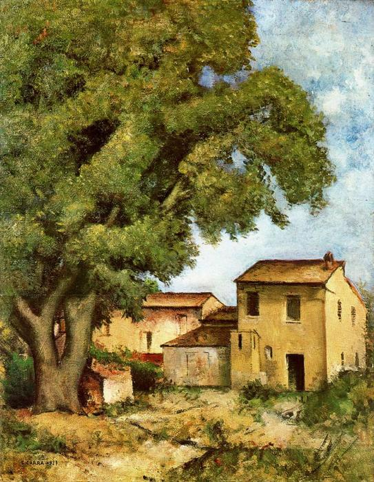
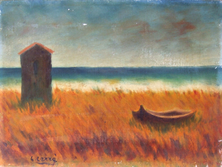
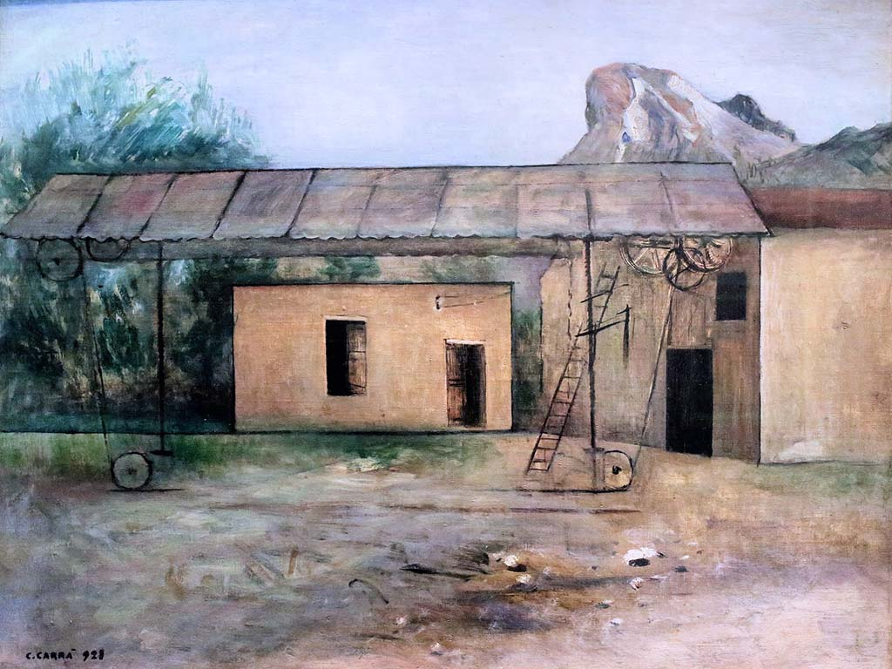
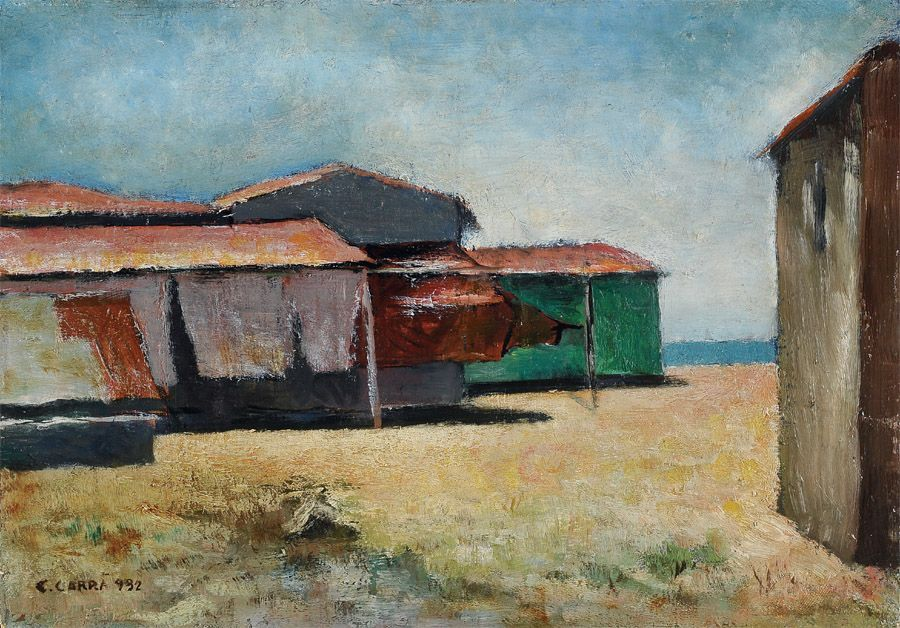
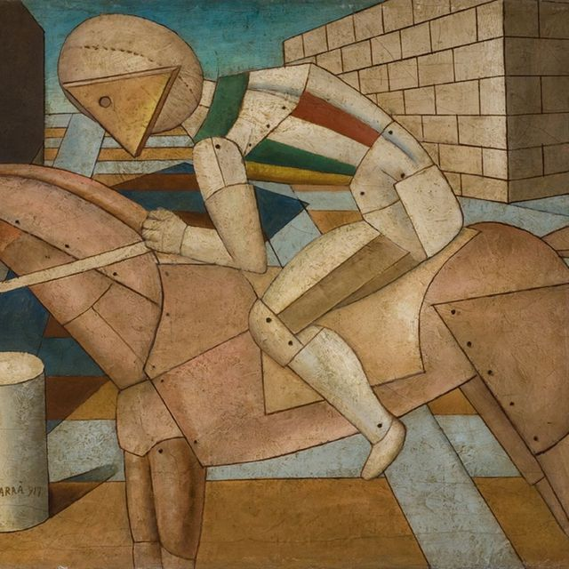

Carlo Carrà
Carlo Carrà (1881-1966) è stato un protagonista del Futurismo italiano. Considerato un fondatore del movimento,
celebrava la modernità con opere innovative e dinamiche.
I suoi dipinti, come "Manifestazione interventista" e "Cavaliere rosso",
catturavano il progresso tecnologico attraverso forme geometriche e colori vivaci.
Carrà ha avuto un ruolo chiave nell'evoluzioneā dell'arte italiana del XX secolo.


ca 


Torna alla Home Page